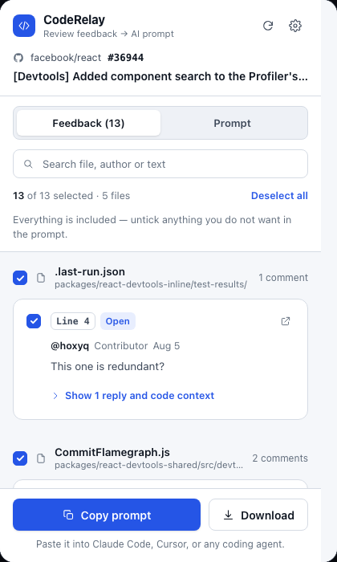
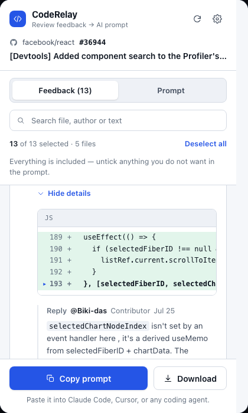
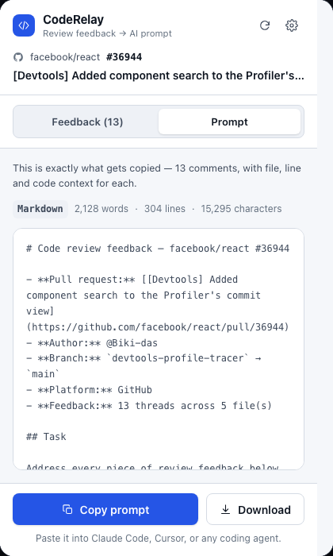

Your reviewer
said it.
Your agent
never heard it.
@priya · rate-limit.ts:141
This limits per-process, not per-user. Key it on the API token.
@sam · ingest.ts:88
Same problem here — can we pull this into one middleware?
@priya · ingest.ts:87
req.ip is the proxy — this rate-limits the load balancer.
@dev · resolved · collapsed
Switching to a token-keyed store — see the reply thread.



Prompt copied — 13 comments
Extract · Review
Every comment,with its code.
Copy · Paste
One prompt foryour coding agent.
Coding agent13 threads · 5 files
❯ # Code review feedback — facebook/react #36944- **Pull request:** [[Devtools] Added component search to the Profiler's commit view]- **Author:** @Biki-das- **Branch:** `devtools-profile-tracer` → `main`- **Feedback:** 13 threads across 5 file(s)## TaskAddress every piece of review feedback below.
CodeRelay
Turn code review feedback into AI-ready prompts.
GitHub/GitLab/Azure DevOps